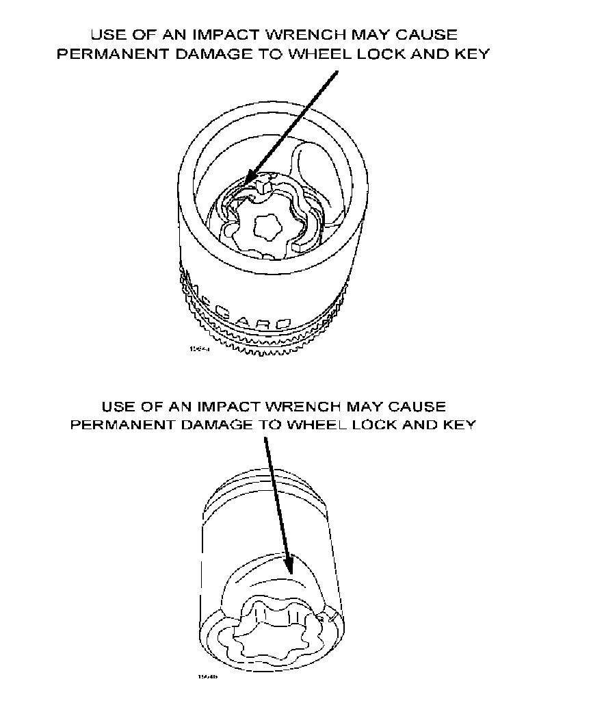

Wheels - Wheel Lock Installation Precautions
TSB: 02-001/06
ALL MODELS - MAZDA WHEEL LOCK INSTALLATION - SERVICE TIP
APPLICABLE MODEL(S)/VINS
All Models
DESCRIPTION
Preliminary examinations performed by Mazda North American Operations have found that several wheel locks replaced under warranty have not failed due to manufacturer defects. This bulletin is to outline the proper installation procedures and torque specifications.
Please have technicians pay close attention when installing wheel locks. The wheel locks must be tightened to the Mazda recommended torque specifications for wheel nuts to prevent damaging the wheel lock and/or wheel.
INSTALLATION PROCEDURE

Any wheel locks that are damaged due to improper removal and/or installation will not be considered a manufacturer defect and will not be covered under Mazda warranty coverage.
1. Remove one lug nut from each wheel. If studs are dirty, clean with a wire brush prior to installing locks.
2. By hand, install one wheel lock on each wheel.
WARNING:
- Use of an impact wrench may cause permanent damage to wheel lock and key.
3. Using the special key supplied in the wheel lock set and a torque wrench, tighten each wheel lock to the Mazda lug nut torque specified for that vehicle located in section 02-17 WHEELS AND TIRES in the appropriate Workshop Manual.
NOTE:
- For ease of removal and installation, the wheel lock should always be the last lug nut tightened on each wheel and should always be the first one removed.